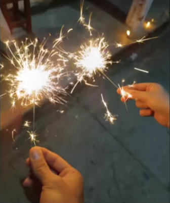

Felices 15 meses
Nuestra biografia
Yo estoy muy enamorado de mi novia, ella tambien esta muy enamorada de mi, le hago esta
pagina para que recuerde que todas las fechas por pequenas que parezcan siguen siendo
especiales para mi, porque ella aun con el paso de tanto tiempo sigue siendo muy
valiosa para mi, la adoro y la quiero siempre conmigo.
La ternura es algo que hace tiempo quedo en un segundo plano, ahora nos conocemos todo
lo agradabe y lo no tan agradable, lo que nos gusta y lo que no y lo que puede llegar
a generar incomodidad, como mis ronquidos o la mania de sacarse mocos.
Yo solo se que te amo mucho e intento hoy expresarte un poco de mi amor.